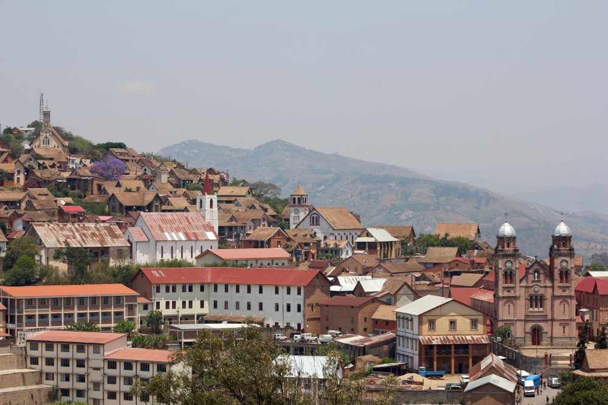
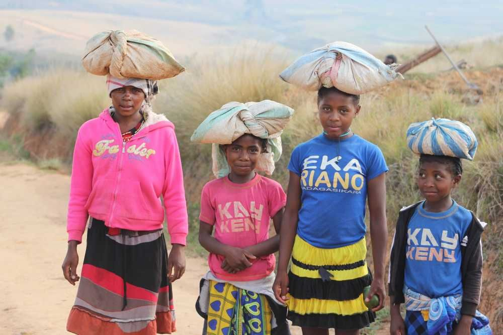
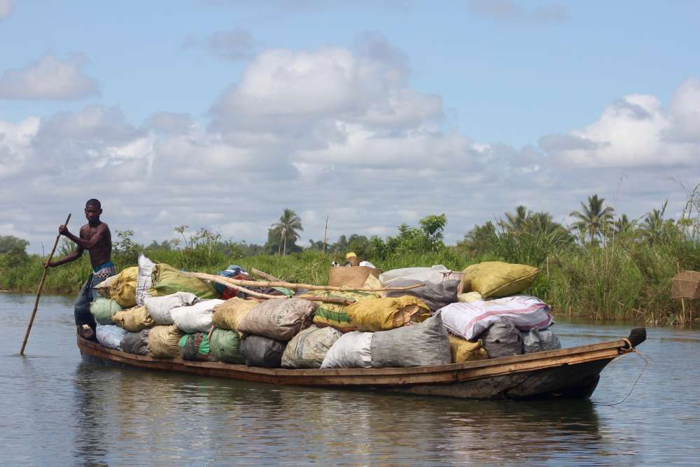
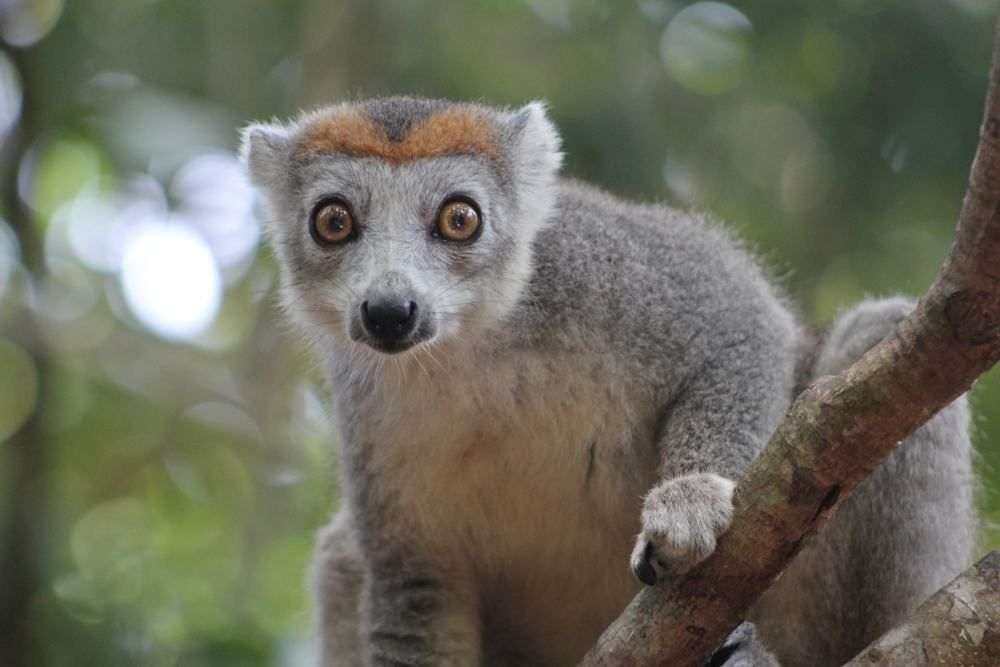
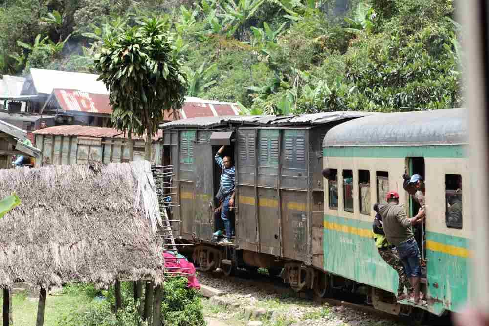
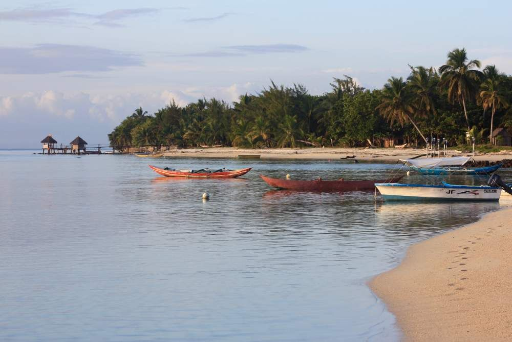

„Der Reisebericht zu unserer Madagaskarreise 2019 – eine schöne Gelegenheit nochmals in Erinnerungen an dieses grosse Abenteuer in Madagaskar zu schwelgen.

So sind wir vom 15. Oktober bis am 19. November 2019 einem Reiseprogramm gefolgt, dass Ellen Spinnler für uns zusammengestellt hat und wir mit dem Team von PRIORI in Antananarivo nach unseren persönlichen Wünschen detailliert anpassen durften. Schon die Ausarbeitung dieser 5-wöchigen Reise war ein Vorgeschmack auf die eingeschränkten Reisemöglichkeiten. Dies liess uns auf ein grosses Abenteuer hoffen. Auch wenn uns ursprünglich eine etwas individuellere Fortbewegung vorschwebte, haben wir uns dazu entschieden, uns den Grossteil der Reise von einem Fahrzeug und Fahrer von PRIORI führen und transportieren zu lassen.
So nahm uns unser Fahrer Mbola bei der Ankunft am Flughafen mit einem freundlichen Lächeln in Empfang und wir waren froh, ihn bis zu unserer Abreise als Begleiter bei uns zu haben. Seine vielen wertvollen Hintergrund-informationen, in hervorragendem Englisch vermittelt, liessen uns tief in die madagassische Kultur eintauchen und sein waches Interesse führte in vielen Gesprächen, zu interessanten Erkenntnissen und zu einem inspirierenden Austausch. Sein toller Humor trug viel zur guten Stimmung bei. Zugleich zeigte uns diese Heiterkeit auch, dass es ein schöner Teil der madagassischen Lebenskunst darin besteht, jeden Tag zu leben wie er kommt.Dem „Hier und Jetzt“ ist die grösste Bedeutung zuzumessen

Etwas von dem wir uns in unserem Leben gerne etwas mehr wünschen. Dies zeigte sich auch in diversen Begegnungen mit Einheimischen. Welche wir, besonders etwas abseits der Touristenströme (in Madagaskar verhältnismässig angenehm klein) als sehr freundliche und zuvorkommende Menschen wahrnahmen. Uns blieb unter anderem, wegen der beeindruckenden Arbeits-leistungen in der zu praktisch 100 % manuellen Landwirtschaft, dem fingerfertigen Handwerk und der intakten sozialen Gemeinschaften, ein sehr würdevolles Bild der Bevölkerung. Die grosse Armut kommt sehr selten auf bedrückende Weise zum Ausdruck auch wenn sie vielerorts deutlich sichtbar ist. Die Fröhlichkeit der Menschen, besonders der Kinder, die Geschäftigkeit und farbenfrohe Vitalität überwiegten. Sie gehörten zu den Höhepunkten, die wir auf unserer Reise erleben durften.
Ein weiterer Höhepunkt waren die vielen Naturerlebnisse
Auch wenn wir keine ausgesprochenen Trekking-Anhänger sind und uns lediglich mit Tageswanderungen nicht all zu tief von der Zivilisation wegbewegt haben, war die erlebte Reichhaltigkeit von verschiedensten Landschaften enorm.

Für uns persönlich am eindrücklichsten waren die Bootsfahrten auf dem Kanal des Pangalanes und die Wanderung im Andringitra Nationalpark, auch wenn wir an diesen Orten nicht mit übermässig vielen Tierbeobachtungen gesegnet waren, was wir ansonsten natürlich auch als Höhepunkt unserer Reise sehen. Besonders die sehr bedachte und ruhige Verhaltensweise der Lemuren und Chamäleons, liess uns staunen. Sie motivierte uns, immer wieder durch die Wälder zu streifen und die wunderlichen Kerlchen aufzusuchen.
Als letzten Höhepunkt, auch wenn wir noch etliche weitere aufzählen könnten (z. B. die Zugfahrt von Fianarantsoa nach Manakara), möchten wir unseren Strandaufenthalt auf Sainte Marie bzw. Ile aux Nattes erwähnen, noch so naturbelassen und ruhig war dies eine Perle der Ruhe und Entspannung, was einem jeglichen Lärm und jegliche Hektik wie es zum Beispiel im täglichen Verkehrsstau im Zentrum von Antananarivo erlebt werden kann, vergessen lässt.Wir haben unser Reisetempo sehr geschätzt

Ganz nach dem allgegenwärtigen „Mora-Mora“ absolvierten wir unser Reiseprogramm auf sehr gemütliche Weise, was dem Verarbeiten der vielfältigen Eindrücke sehr zugute kam, auch wenn das annähernd gleiche Programm von vielen Touristen in 3 statt in 5 absolviert wird und demzufolge, noch einige weitere Destinationen hätten entdeckt werden können, haben wir nicht das Gefühl, etwas verpasst zu haben und hüten einen kleinen Schatz an Entdeckungen, auf die wir uns bei einem allenfalls weiteren Besuch in Madagaskar freuen können.
Besten Dank für Alles!
Herzliche Grüsse“
Barbara R. & Thomas E.